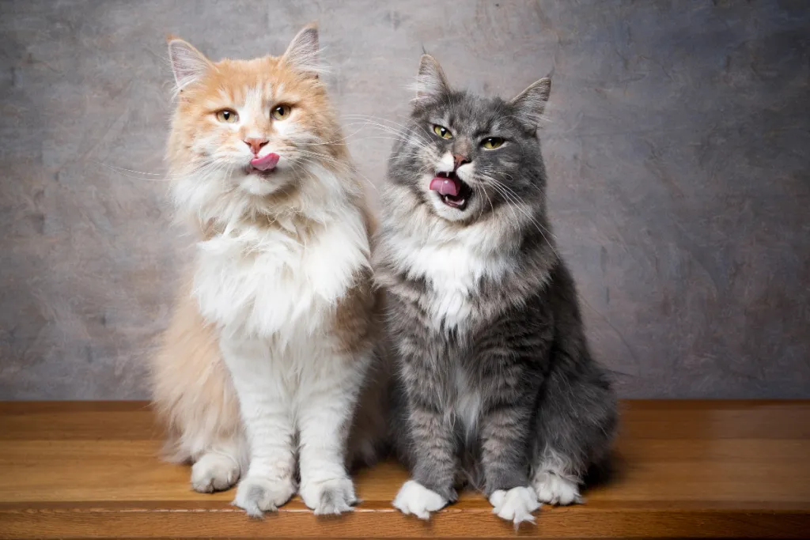
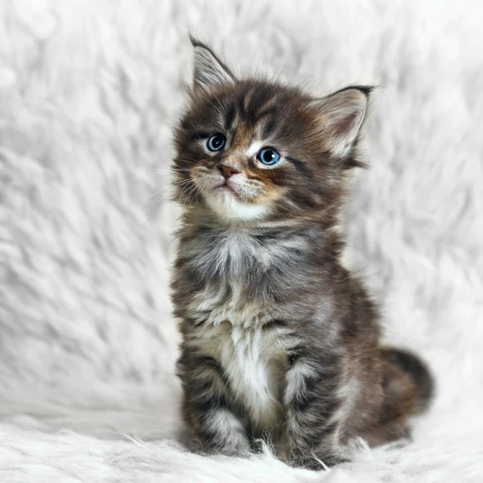

The Maine Coon has a muscular, long, rectangular body with a broad chest. It has large, round paws with tufts of hair sticking up from the toes. The head is slightly longer in length than width, with high cheekbones, a distinctive square muzzle and large, well-tufted ears.
Despite her size and history, the Maine Coon cat is sweet tempered and gentle. She loves her parents and adapts to any environment as long as she has some exercise room. When she runs, she can be quite loud but her soft, quiet voice reassures you that this lion is truly a lamb.
 The Maine Coon was considered the largest breed of domestic cat until the introduction of the Savannah cat in the mid 1980s, and is still the largest non-hybrid breed. On average, males weigh from 13 to 18 lb (5.9 to 8.2 kg), with females weighing from 8 to 12 lb (3.6 to 5.4 kg).[23] The height of adults can vary between 10 and 16 in (25 and 41 cm) and they can reach a length of up to 38 in (97 cm), including the tail, which can reach a length of 14 in (36 cm)[24] and is long, tapering, and heavily furred, almost resembling a raccoon's tail.
Dog angry Maine CoonS